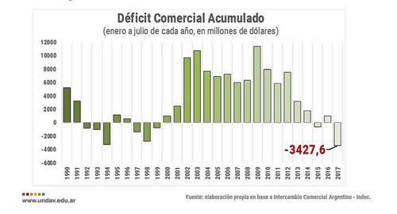

Real Chubut - Agencia de Noticias


En 2017 la Argentina acumula el peor déficit comercial de la historia económica

El déficit comercial en los primeros siete meses del año marcó acumuló u$s 3.427,6 millones y marcó un récord en la historia económica argentina: es el más elevado desde 1910. Y el peor desde el resultado negativo de 1994, que marcó u$s 3.255 millones.
"Semejante deterioro comercial se explica por una relativa estabilidad de las exportaciones, que crecen a un ritmo tenue del 1,4% acumulado, mientras que las compras de bienes desde el exterior se incrementan por sobre el 15% en lo que va del año", sostuvo un informe elaborado por la Universidad Nacional de Avellaneda (Undav).
La idea del "deterioro" se evidencia en la comparación con mismos meses de los últimos años, según datos oficiales del INDEC. En 2016 el intercambio comercial fue superavitario en u$s 1.020 millones; en 2015 fue de u$s 1.437 millones, y en 2014 el positivo llegó a u$s 4.141 millones.
"El esfuerzo que está haciendo la economía argentina para aumentar la producción no se refleja en el sector externo porque se necesitan cada vez más ventas para compensar las crecientes importaciones", consideró el estudio. El déficit con Brasil, China y los Estados Unidos acumula en julio 73,6%, 14% y 3,9%, respectivamente.
Los rubros que incrementaron las ventas al exterior fueron el maíz, el oro, los automóviles y tractores y el biodiesel, que desde agosto ahora deberá lidiar con un aumento de los aranceles de exportación a EEUU.
Muy por el contrario, con lo que sucede con el comportamiento a la baja de las exportaciones, las importaciones han crecido considerablemente, reflejando un cambio de tendencia en el proceso de sustitución de importaciones que se presentaba años anteriores. "En el detalle por uso económico, la avalancha de importaciones tiene origen en un incremento sustantivo de la adquisición privada de vehículos de pasajeros (42,3%), además de una notoria suba de bienes de capital y consumo (13,8% y 12,5%, respectivamente)", agregó el informe realizado por Santiago Fraschina, coordinador del Módulo Política Económica, del Observatorio de Políticas Públicas de la Undav.
"Una mirada superficial podría sugerir que los rubros que traccionan el avance de las compras fronteras afuera tienen que ver con la mejora de las expectativas de los inversores sobre el potencial de nuestra economía", señalaron, aunque recalcaron que "la suba de las importaciones, se explica en gran medida por factores macro e institucionales, como la apreciación del tipo de cambio en la primera mitad del año, y la aprobación de licencias de importación".
"En cuanto a los bienes de capital destinados a procesos productivos, se focalizan en el complejo agroindustrial, donde la compra del exterior de Maquinaria Agrícola crece en torno al 55%. La quita de retenciones y la promesa de reforma fiscal mejoraron las expectativas de rentabilidad", afirmó.
Desagregando por producto comerciado, la composición de las ventas al exterior presenta una tendencia a la primarización. En lo que va del año, se verifican subas significativas en arroz (u$s 12 millones más que hace dos años atrás), lentejas (+u$s 2,5 millones) y carne congelada (+u$s 3,3 millones).
Según los expertos, la actual coyuntura también refleja una mayor presencia de productos primarios en las importaciones, en particular, en productos sensibles para las economías regionales. "Aumentó casi u$s 4 millones la compra de cítricos desde el exterior en el consolidado a siete meses, respecto a igual período de 2015, mientras que la adquisición del exterior de manteca y durazno subió u$s 2 millones y u$s 1,6 millones, respectivamente", destacó el reporte.
"Con todo, de mantenerse esta tendencia, 2017 se consolidará como el año de mayor déficit comercial de la historia, y profundizará el panorama opaco en nuestra matriz de comercio exterior, de cara a los próximos años", remarcó.
En ese marco, desde la Undav lanzaron una señal de alerta, ya que estiman que por este camino el déficit comercial del 2017 alcanzará los u$s 5.876 millones, el peor registro anual de la historia argentina. "La política desendeudamiento externo del gobierno nacional provee por ahora los dólares necesarios para solventar los desequilibrios, pero en el fondo no deja de ser síntoma de los problemas estructurales de la economía argentina, los que terminan generalmente en un estrangulamiento externo", sostuvieron.
Fuente: Ambito